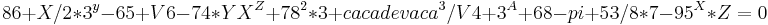
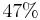
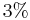
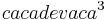

De: La Frikipedia, la enciclopedia extremadamente seria.
De: La Frikipedia, la enciclopedia extremadamente seria. De: La Frikipedia, la enciclopedia extremadamente seria.
Chico de Relleno, es el también llamado personaje universal, chico impotente omnipotente, u/o personaje de Anime barato que suelen utilizar mangakas hartos de crear personajes que pocas veces volveran a salir faltos de imaginación en situaciones extremas. Se caracteriza por tener mas protagonismo que el propio protagonista, y por su capacidad de crear mas clones que Naruto. Suele aparecer muy frecuentemente en los sitios mas inesperados y reconditos del planeta como suelen ser: Las kilometricas gradas de los kilometricos campos de Oliver y Benji, los campos donde se libran las batallas espartanas en 300 (se sospecha que solo 5 o 6 eran de verdad, el resto eran espartanos de relleno), en los abdominales de Naruto (Naruto alberga dentro de si muchisimos musculos de relleno que en verdad no existen (notese claramente en cuando se quita la camiseta en el entrenamiento de la cascada)), etc.
Se sospecha que si el ultimo superviviente jamás a podido sobrevivir en el polo norte es porque esta lleno de chicos de relleno que ya se han apoderado de todas las reservas de comida que habian behind the musgo.
El chico de relleno, es un ser que ha ido evolucionando a lo largo de la historia a diferencia de ciertas especies humanas los cuales involucionan,Al principio de los tiempos solo existian tres tipos de seres vivos: Dinosaurios, chicos de relleno, y el Gigantomante version premium. El primero y el ultimo nunca se volvieron a ver mas que en fotos.
Mas adelante aparecieron los neandertales, y como no podia ser de otra forma, junto a ellos como si de una lapa se tratara aparecieron los conocidos como neandertulis rellenatus (neandertales de relleno). Estos últimos fueron desterrados del Anime en poco tiempo, y pasaron a formar parte series de dibujos de clase B,Cuando los neandertales aprendieron ha hacer sus distintos tipos de graffitis rupestres, los chicos de relleno comenzaron a frustrarse al ver que perdian el poco protagonismo que alguna vez en su vida habian tenido.
Hay varias teorias acerca de porque los unicos supervivientes de la evolucion fueron los chicos de relleno:

Mas tarde los chicos de relleno empezaron a subir su estatus de vida, eran invitados a todas las fiestas del mundo, tenian entrada gratis a los campos de futbol, por las calles no se veia mas que gente de su especie, ocupaban la casas de tus vecinos (un buen chico de relleno nunca ocupara la casa de un protagonista), aparecian en conquistas historicas, comenzaron a trabajar para el ejercito de napoleon, i mas tarde para granjas, panaderias, supermercados, asociaciones de shinigamis, o incluso en el MacDonals.
Después, sobre el siglo XIX, los chicos de relleno empezaron a encontrar su verdadera razón de vivir. Empezaron a aparecer los mangakas, los cuales pedian chicos de relleno en innumerables ocasiones. Los chicos de relleno parecieron encontrar su lugar del mundo, importantes presidentes, ingenieros, comandantes del ejercito empezaron a irse de sus puestos de trabajo millonarios, hacia Japón. Donde aspiraban a cobrar una miseria por participar en cualquier serie cutre, con un papel cutre, con una dignidad cutre, y con un sueldo que rozaba los numeros rojos.
Hoy en dia los chicos de relleno siguen su camino de involución mental, y despues de haber perdido la dignidad historica que les quedaba, comienzan a tener una lengua oficial.
Los chicos de relleno solian ser animadores de futbol, estudiantes caientasillas, rellenabutacas en las partys que se montaban sus amigos protas, etc. Por eso al no disponer de un guion real comenzaron a crear su propio lenguaje para que no pareciera que se pasaban toda la escena callados.
Todo y ser mas complejo que el japonés, y de tener menos normas que el Idi0mAhhH_dEr_mesSsëNgErrRH!. Es un idioma bastante sencillo i con un diccionario que roza las 5 paginas. A continuación se muestra una pequeña parte de lo ke es el idioma de estos chicos.
| Relleno | Español | |
|---|---|---|
| Akakuski maracana 10 Ichiga kikuminai New Team | Vamos New Team, o ganas por 10 o te pegamos la paliza de tu vida | |
| mirakujanai karamoco caski chorizo de pamplona | Te huele el culo a chorizo de pamplona | |
| kiek nukita kakirawshi diseminura 1 gremlin karamoco | Eres mas feo que el culo de 1 gremlin | |
| ahh! | (Esto solo quiere decir que se esta muriendo) | |
| quipus mitari okitami eolimus nokia 5230 | Te lleva sonando el movil media hora | |
| tutis guillion piedustas igmundo marilondie sardinas en conserva | chico de relleno abrió un cofre y obtuvo lata de sardinas en conserva x5 | |
| oh oh oh, ha, ha, haaa, ikus, ohh oh! | (se suele escuchar cuando el chico de relleno y la chica de relleno se encierran en una habitacion, pero aun no se sabe que quiere decir) | |
| O_O | La cara que puso papá relleno cuando descubrió lo que queria decir | |
| Guijun sepvidaqui monker upi-karamoko shut up | Callate caraculo, que estan grabando | |
| Yacilo uedo kuyikanu Belen Esteban kinoku uyi Salvame | El otro dia fui al circo a ver a los payasos | |
| Duei loniefo juedicu malonitakai yujikol l'oréal | Se me ha acabado el tinte de pelo y no recuerdo de qe numero era | |
| IkundiH nosimulakiH forisukaH ijunlongiH | A ella le gusta la gasolina (8) |
Esta es un pequeña parte del ingenioso idioma creado por estos chicos que como es observable en esta tabla, procede de una minuscula degeneracion del japonés antiguo.
Hasta hace poco, se creia que estos chicos se alimentaban basicamente de patatas fritas, agua del grifo, y algún que otro bistec de cucaracha. Poco tardaron en llegar a una conclusión un poco mas logica, que les hizo conseguir una dieta mucho mas economica, saludable y gracias a la cual podian aorrar un poco, (Se comian las racholas). La idea fue:
«Por que gastarnos dinero en comida, si podemos crear clones y luego comernos a los clones?»
~ Ejecutivo de Tv Tokyo
Esto dio lugar a una nueva especie.
El canivalismo empezó a aparecer en la sociedad. Los humanos de a pié, avariciosos, tacaños y agarraos como ellos solos, empezarón a ahorrar en comida gracias a este metodo. Esto dio lugar a la propagacion de los idiotas los zombies. Los humanos al no comprender como podia ser que los chicos de relleno se comieran entre ellos y siguieran siendo el mismo numero de personas en casa, comenzaron a comer y a comer. Y luego los muy idiotas se extrañaban cuando sus mujeres les decian cosas como:
Finalmente llego el dia en que estos zombies, fueron descubiertos y llevados a juicio. Perdieron el juicio cuando unas horas mas tarde los inutiles se comieron a sus abogados se encontro el cuerpo sin vida de sus abogados.
Estos amables canivales, que intentaban imitar a los chicos de relleno, finalmente pasaron una temporidita entre rejas hasta que murieron por falta de sueño después de comerse la cama de sus celdas.
Esta ha sido una pregunta a la que el hombre ha intentado dar respuesta durante los siglos de los siglos. Y esto a dado lugar a muchos estudios en los que se han invertido millones y millones de PokeYenes.
El señor Albert Rellenenstein afirmo que aplicando la siguiente formula:  sobre un paquete de cleenex que contenga un  de mocos y solamente un  de pelos de nariz fosilizados. Podian comenzarse a crear chicos de relleno como churros.
Esta teoria fue una de las mas utilizadas a principios de siglo, hasta que se descubrio lo dificil que era dar con el valor de "Y" cuando "X" era , ya que la que el valor dependia directamente de lo que hubiera comido dicha vaca en su ultimo almuerzo.
La señora Pirujilleno, consiguió dar con la forma y proporciones exactas para conseguir la receta de Alquimia con la que crear chicos de relleno a casquiporro. Tras muchas investigaciones, Pirujilleno dió con la receta que se ha estado uitilizando hasta que se prohibieron las drogas principios del siglo XX.
Se dice que nisiquiera la propia bruja llego a ponerla a prueba mas de 3 veces, ya que falleció de locura, cuando por error confundio el 1/2 kilo de relleno de Naruto y añadio la saga de los bounds de Bleach, esto junto a la tele de plasma de 52 pulgadas y en 3D la mató en el acto, no se sabe muy bien si de estrés, aburrimiento, o simplemente asco.
Autor(es):